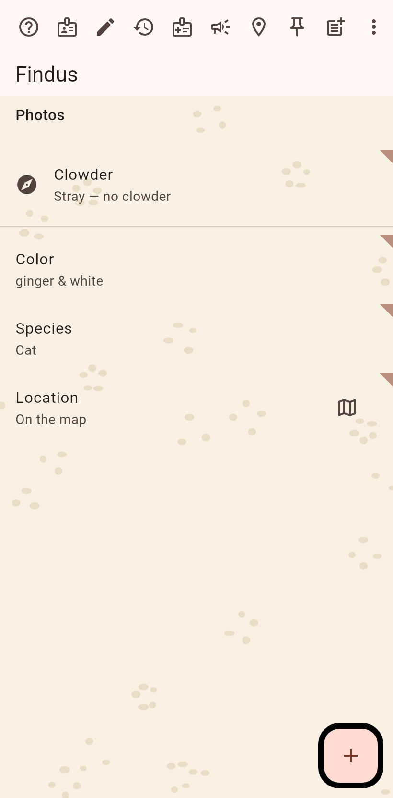
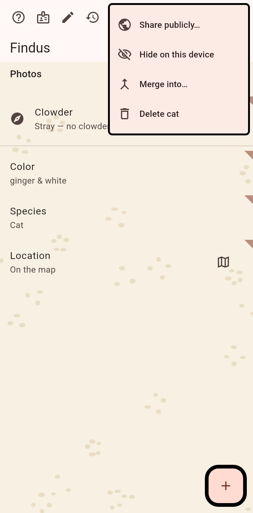
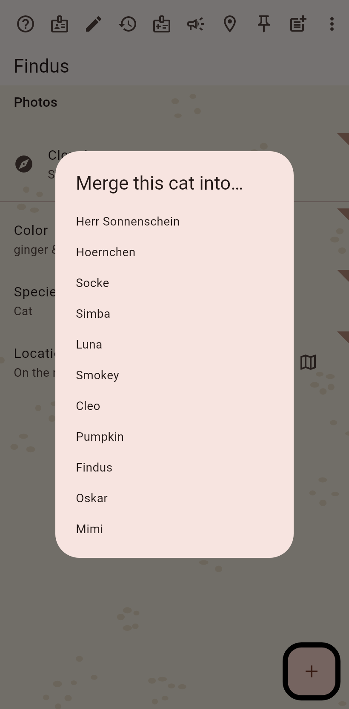
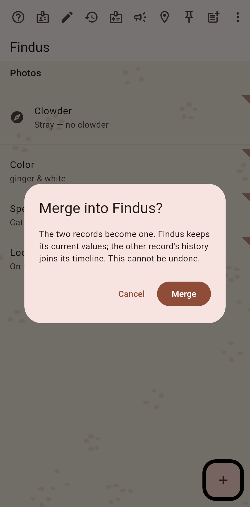

1. The duplicate
The page of the record that will go. Merge sits in the ⋮ menu when the bar is full.

2. The menu
"Merge into…" among the actions that did not fit the bar.

3. Pick the survivor
The other cats are offered; the one you pick keeps its values and gets the other's history.

4. Confirm
A moment is recorded first; the merge itself cannot be undone, so it asks once more.
